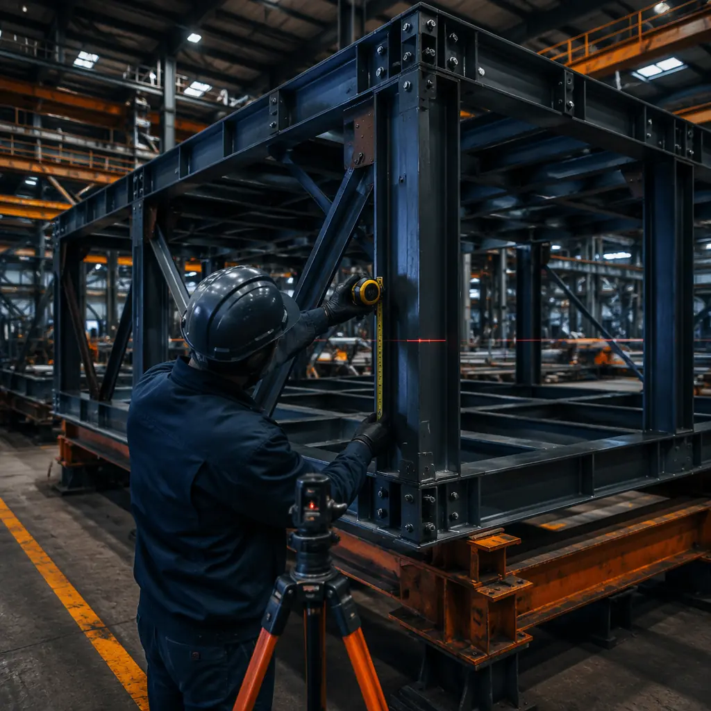
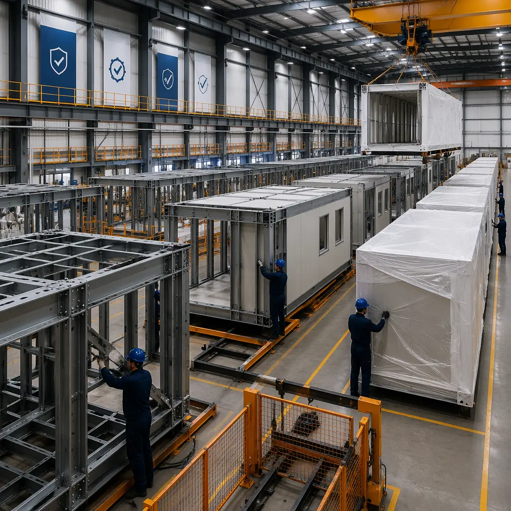
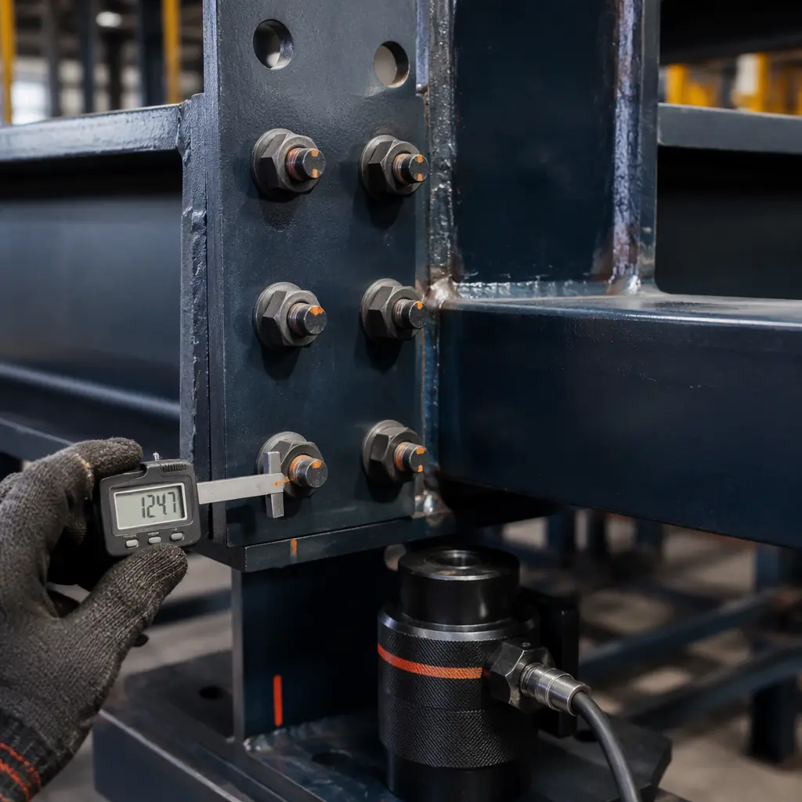
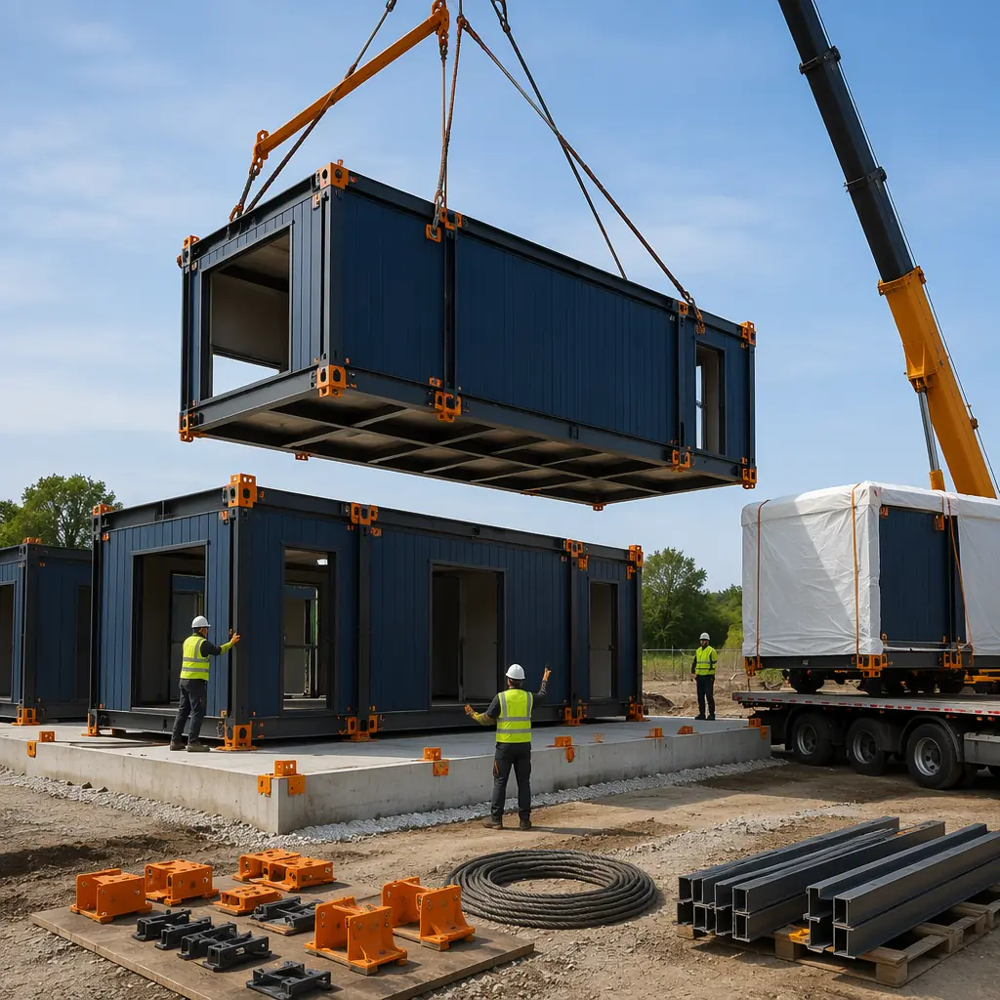

When a developer commits capital to a modular construction project, the warranty package is not a footnote to the contract — it is the contractual mechanism that allocates long-term structural risk between the manufacturer and the owner. In site-built construction, warranty obligations are distributed across separate contracts with the general contractor, each subcontractor, and each material supplier, creating a chain of liability that becomes difficult to enforce when defects emerge years after project completion. Modular construction consolidates this fragmented warranty landscape into a unified coverage framework backed by the manufacturer's factory quality control system, state industrial program certifications, and traceable production records that make warranty claims fundamentally easier to substantiate. This article examines the four categories of modular construction warranties, the factory-driven quality infrastructure that enables extended coverage periods, the critical distinction between covered and excluded conditions, and the practical steps developers should take when evaluating warranty terms across modular manufacturers. For a broader discussion of how factory control reshapes construction risk, see our analysis of modular construction insurance and risk management.

The Four Categories of Modular Construction Warranties
Modular construction warranty packages typically comprise four distinct coverage categories, each addressing a different layer of building performance and backed by different verification mechanisms. Understanding what each category covers — and, critically, what it does not — is essential for developers evaluating manufacturer proposals.
1. Structural Warranty (10–20 Years)
The structural warranty is the longest-duration coverage and the most consequential for long-term asset value. It guarantees that the building's primary structural components — the steel or concrete frame, the module-to-module connections, the floor and roof assemblies, and the foundation interface points — will perform to the specified design loads (live load, wind load, seismic load, snow load) for the warranty period. In modular construction, structural warranty periods of 10 to 20 years are standard among established manufacturers, compared to the 1-year structural workmanship warranty that is typical in site-built construction under most state contractor licensing laws. This dramatic difference in coverage duration is not a marketing claim — it is enabled by the factory production environment, where every structural weld, bolt torque, and connection detail is performed under controlled conditions with documented inspection records. A structural warranty claim on a modular building can be traced to the specific module serial number, production date, quality inspector, and steel batch certification — a traceability chain that is simply not available in site-built construction, where structural steel connections are field-welded or field-bolted without serialized quality records. For context on how modular structural engineering achieves this durability, see our guide to modular seismic design and ductile steel connections.
2. Workmanship Warranty (1–5 Years)
The workmanship warranty covers defects in the assembly and finishing of factory-built modules: drywall cracks, paint delamination, flooring adhesion failures, millwork installation defects, and MEP system fit-and-finish issues. In modular construction, the workmanship warranty period is typically 1 to 5 years, comparable to or exceeding the 1-year workmanship standard in conventional construction. The key difference is enforceability: a site-built workmanship defect requires the developer to identify the responsible subcontractor from among the 15–25 trades that touched the affected area, then prove that the defect resulted from that subcontractor's work rather than from a preceding or subsequent trade's scope. A modular workmanship defect is reported to a single manufacturer, who owns the entire assembly process and can dispatch a repair team without a liability investigation. MODURA's workmanship warranty covers 100% of factory-assembled components for 2 years, with an optional extension to 5 years that approximately 40% of commercial project owners elect to purchase.
3. Material Warranty (Per Manufacturer Specification)
Material warranties cover the individual building products installed in the modules: roofing membranes (typically 15–30 years from the membrane manufacturer), window and door units (10–20 years), HVAC equipment (5–10 years compressor warranty), and plumbing fixtures (1–5 years). The modular manufacturer passes through the original equipment manufacturer warranties and, critically, warrants that these materials were installed in accordance with the OEM's installation specifications — a condition that is verified in the factory through standardized installation procedures but frequently violated in site-built construction when field conditions force installation compromises. When a roofing membrane fails prematurely, the developer's claim against the membrane manufacturer depends on proving correct installation; in modular construction, the factory installation records serve as that proof.
4. Waterproofing & Envelope Warranty (5–10 Years)
The building envelope warranty covers water and air infiltration through the module exterior walls, roof assembly, and module-to-module joint seals. This is arguably the highest-value warranty category for building owners because envelope failures — water intrusion, condensation, air leakage — are the leading cause of premature building degradation, mold growth, and occupant complaints across all construction methods. In modular construction, the vast majority of the building envelope is assembled in the factory, where the weather-resistive barrier, flashing, window and door installation, and exterior cladding attachment are performed under roof and subject to factory QC inspections. The only field-sealed envelope components are the module-to-module joints, which are designed as pre-engineered connection details with factory-supplied gaskets, sealants, and compression fittings. MODURA's standard envelope warranty covers water penetration through factory-assembled wall and roof assemblies for 10 years, with module joint seals covered for 5 years (reflecting the joint's exposure to field installation variables).

How Factory QC Enables Extended Warranty Periods
The 10–20 year structural warranty that modular manufacturers offer is not a product of more generous contract language — it is a product of the factory production environment's ability to eliminate the variables that cause warranty claims in site-built construction. Understanding this connection between factory quality systems and warranty duration is essential for developers who are comparing modular and conventional proposals and wondering whether the longer warranty is real or aspirational.
Weather-independent production eliminates moisture-related defects. In site-built construction, the structural frame, sheathing, and interior finishes are exposed to rain, snow, and humidity during the 6–12 month construction period. Wood framing that absorbs moisture during construction will dry unevenly, causing differential shrinkage that manifests as drywall cracks, door misalignment, and floor squeaks 12–24 months after occupancy — typically after the 1-year workmanship warranty has expired. Steel framing that is exposed to construction-phase moisture can develop surface corrosion at connection points that weakens the structural assembly over a 5–10 year horizon. In modular construction, the structural frame is never exposed to weather: steel is fabricated, welded, and assembled in a climate-controlled factory, and the completed module is wrapped for transport and craned into position within hours of arriving on site. The structural assembly enters the building dry and stays dry.
Standardized work instructions eliminate trade-to-trade variability. A site-built structural connection — say, a steel column-to-beam moment connection — is welded by an ironworker whose weld quality varies with experience, fatigue, weather conditions, and inspection rigor on that particular day. A modular structural connection is welded on a factory production line by a certified welder following a standardized work instruction, with every weld visually inspected and a percentage ultrasonically tested. The result is not just higher average quality; it is dramatically lower quality variance. Warranty claims are driven not by average quality but by the tail of the quality distribution — the 2–3% of connections that fall below acceptable standards. Factory production compresses that tail by an order of magnitude, which is why modular manufacturers can offer 10–20 year structural warranties while site-built contractors offer 1 year.
Serialized traceability makes claims adjudication fast and objective. When a structural issue emerges in a site-built building, determining responsibility requires forensic investigation: which subcontractor performed that connection, what was the inspector's report, were the materials from an approved supplier? In modular construction, every module carries a serial number linked to a digital production record that includes the steel mill certifications for every structural member, the welder ID and inspection results for every connection, the torque values for every bolted joint, and the quality inspector sign-off for every production stage. A warranty claim on module #247 can be resolved by pulling its digital production record — a 30-second database query rather than a multi-week forensic investigation. For a detailed examination of the quality systems that make this traceability possible, see our deep-dive into modular construction QA/QC systems.
| Warranty Factor | Site-Built Construction | Modular Construction |
|---|---|---|
| Structural warranty duration | 1 year (standard contractor warranty) | 10–20 years (manufacturer warranty) |
| Quality variance | High — weather, labor, and inspection dependent | Low — factory-controlled, standardized processes |
| Claims traceability | Forensic investigation across multiple subcontractors | Serialized module records with full production history |
| Moisture exposure during build | 6–12 months of weather exposure | Zero — factory-built under roof, wrapped for transport |
| Warranty enforcement mechanism | Litigation or negotiation with multiple parties | Single manufacturer + state modular program oversight |

Transportation and Installation Warranty Coverage
One of the most frequently asked questions from developers evaluating modular construction is: who bears the risk if a module is damaged during transport from the factory to the site, or during the crane lift and installation process? The answer depends on the specific contract terms, but modular manufacturers with established logistics operations typically provide integrated coverage that protects the developer from transportation and installation risk through to final module placement.
Transportation coverage. Modules are transported from the factory to the construction site on flatbed trailers, typically with protective wrapping that shields the module from road debris, rain, and dust. The transportation distance for modular projects averages 250–500 miles (the economic radius within which transport costs remain below 5–8% of total project cost), though MODURA has delivered modules to projects up to 1,200 miles from the factory. The manufacturer's transportation warranty covers any damage that occurs during transit — structural frame distortion from road vibration, exterior cladding damage from debris impact, or interior finish cracking from trailer flex — provided the modules were loaded and secured per the manufacturer's transport protocol. The developer's responsibility is limited to ensuring site access roads can accommodate the trailer turning radius and axle loads (typically 80,000 lbs gross vehicle weight for a module transport).
Installation and craning coverage. The highest-risk moment in modular construction is the crane lift: a 20–40 ton module suspended 60–100 feet in the air, being positioned onto prepared foundation pads or onto a previously placed module stack. The manufacturer's installation warranty covers module damage during the lift and placement process, including frame distortion from uneven lifting forces, connection point damage from misalignment during placement, and envelope damage from contact with adjacent modules or the crane rigging. This coverage typically requires that the crane operator and rigging crew follow the manufacturer's lift plan, which specifies the lift points, rigging configuration, wind speed limits, and module orientation sequence. For developers, the key contract provision to verify is that the installation warranty runs from the manufacturer (not from a separate installation subcontractor), consolidating responsibility for both factory production and site installation under a single warranty obligor.

What's Covered vs. What's Excluded — Reading the Fine Print
Modular construction warranties are comprehensive but not unlimited. Developers who understand the standard exclusions before signing a contract are far less likely to encounter unexpected claim denials years after project completion. The following table summarizes the coverage boundary that is standard across established modular manufacturers.
| Typically Covered | Typically Excluded |
|---|---|
| Structural frame defects (steel, welds, connections) | Damage from owner modifications or renovations |
| Module-to-module joint seal failures | Damage from natural disasters exceeding design loads |
| Factory-installed MEP system defects | Site-installed utility connections (water, sewer, power) |
| Building envelope water/air infiltration | Owner neglect of maintenance obligations |
| Transportation damage during manufacturer-arranged shipping | Normal wear and tear, cosmetic deterioration |
| Installation/craning damage under manufacturer lift plan | Site-built components (foundations, landscaping, parking) |
The most important exclusion for developers to understand is the site-built component carve-out. Modular projects include both factory-built and site-built scope: the modules are factory-built, but the foundation, site utilities, parking areas, landscaping, and any site-built connectors (corridor links, elevator shafts, stair towers) are constructed conventionally on site. These site-built components are not covered by the modular manufacturer's warranty — they are covered by the site-work contractor's warranty, which is typically the standard 1-year workmanship warranty. Developers should ensure that the general contract clearly assigns warranty responsibility for each scope element and that there is a single point of contact for coordinating warranty claims that span both factory-built and site-built components. For guidance on the contract structures that make this coordination work, see our guide to modular construction financing and contract structures.
State Modular Program Certification as a Warranty Enforcement Mechanism
One of the most underappreciated dimensions of modular construction warranties is the role of state industrial program certification in providing regulatory backing for warranty enforcement. In the United States, modular construction is regulated by state-level industrial programs (typically housed within the state's Department of Housing, Community Development, or equivalent agency) that certify modular manufacturing facilities, approve modular building plans, and conduct in-plant inspections during production. Approximately 35 states have active modular certification programs, and most recognize certifications issued by other states through reciprocity agreements.
Third-party inspection provides independent evidence for warranty claims. State-certified modular manufacturers are subject to regular in-plant inspections by third-party inspection agencies (typically accredited by the International Accreditation Service or the National Accreditation and Management Institute) that verify compliance with the state-approved building code, the manufacturer's approved quality control manual, and the specific building plans for each project. These inspection reports create an independent evidentiary record that is invaluable in warranty claim situations: if a structural defect emerges and the developer files a warranty claim, the manufacturer must demonstrate that the affected module passed its in-plant inspections at the time of production. If the inspection records show non-conformances that were not resolved, the developer's warranty claim is substantially strengthened. If the records show full compliance, the manufacturer can rely on those records to defend against claims that arise from post-construction causes (owner modifications, extreme weather events beyond design loads, maintenance failures).
State program sanctions provide regulatory enforcement leverage. If a state-certified modular manufacturer systematically fails to honor warranty obligations, the state program that certified the manufacturer can impose sanctions up to and including suspension or revocation of the manufacturer's certification — effectively shutting down the manufacturer's ability to sell modules in that state. This regulatory backstop gives developers enforcement leverage that does not exist in site-built construction, where the only remedy for an uncooperative contractor is litigation. When evaluating modular manufacturers, developers should verify that the manufacturer holds current state program certifications in the state where the project will be located and should understand the complaint and enforcement procedures available through that state program. For a detailed look at the regulatory landscape, see our analysis of modular construction fire safety and code compliance.
Key Takeaway: State modular program certification transforms the warranty from a purely contractual obligation into a regulatory compliance requirement. A manufacturer that ignores warranty claims is not just breaching a contract — it is violating the terms of its state certification and risking its ability to operate in that market.
MODURA's Warranty Track Record — 500+ Projects, Claim Rate Below 0.3%
Warranty terms are only as credible as the manufacturer's track record of honoring them. MODURA has delivered over 500 modular construction projects across 18 countries since 2010, spanning apartments, hotels, offices, healthcare facilities, schools, and industrial buildings. Across this portfolio, the cumulative warranty claim rate is below 0.3% — meaning that fewer than 3 out of every 1,000 modules have generated a warranty claim over the full coverage period. This claim rate is not an accident; it is the statistical expression of the factory quality systems described throughout this article.
What the 0.3% claim rate actually means for a developer. On a 200-module apartment project (approximately 120,000 sq ft, 150 units), a 0.3% claim rate translates to a statistical expectation of fewer than one warranty claim over the life of the coverage period. On the rare occasions when claims do arise, MODURA's average claim resolution time is 14 days from notification to completed repair — supported by the serialized module production records that allow the engineering team to identify the root cause without weeks of site investigation. The most common claim types (representing approximately 70% of the 0.3%) are minor envelope seal adjustments at module joints, which are addressed by applying additional sealant at the joint interface — a repair that typically takes under 4 hours on site. Structural claims, which are the highest-consequence category, represent less than 0.05% of modules delivered — approximately 1 in 2,000 modules — and are typically related to transportation-induced frame stress that is identified during the post-delivery inspection and addressed before modules are installed. For a broader perspective on how modular construction compares to other building methods, see our comprehensive comparison of modular vs traditional construction.
Factory count and certification scope. MODURA operates four ISO 9001:2015 certified manufacturing facilities with a combined annual capacity of 8,000+ modules. Each facility is certified by the state industrial programs in its operating region and is subject to quarterly third-party audits of its quality management system, production processes, and warranty claim handling procedures. The ISO 9001 certification requires documented procedures for warranty claim receipt, investigation, resolution, and corrective action — procedures that are audited annually by an accredited certification body. For developers, the practical significance of ISO 9001 certification is that the warranty process is institutionalized: if the personnel who managed your project have moved on, the warranty process continues to function because it is part of the certified quality system, not dependent on individual relationships.
How to Evaluate Warranty Terms When Selecting a Modular Manufacturer
Not all modular construction warranties are created equal, and developers who evaluate warranty terms solely on duration (\"Company A offers 15 years, Company B offers 20 years, so B is better\") are missing the provisions that determine whether a warranty is actually enforceable when a claim arises. The following checklist identifies the seven provisions that developers should examine in every modular manufacturer warranty proposal.
- Warranty obligor identity. Is the warranty issued by the modular manufacturer itself, or by a separate corporate entity (a holding company, a special-purpose vehicle, or an affiliated warranty company)? A warranty issued by a separate entity may be difficult to enforce if that entity is undercapitalized or can be dissolved without affecting the manufacturing operation. The strongest warranty position is one where the manufacturing entity and the warranty obligor are the same company, so that the warranty obligation is backed by the manufacturer's ongoing business operations and state certification status.
- Transferability to subsequent owners. If the developer sells the building during the warranty period, does the warranty transfer to the new owner? Transferable warranties increase the building's resale value and are standard among established modular manufacturers. Non-transferable warranties effectively convert a 20-year coverage period into coverage that only lasts as long as the original developer owns the building — potentially just 3–5 years for a build-to-sell development.
- Claim notification period and procedure. How long does the owner have to notify the manufacturer after discovering a defect? Some warranties require notification within 30 days of discovery; others allow 90 days or longer. The notification procedure (written notice to a specific address? online portal? phone call followed by written confirmation?) should be clearly specified and practical for the owner's facilities management team.
- Remedy scope. Does the warranty cover only the cost of repairing or replacing the defective component, or does it also cover consequential damages (water damage from an envelope leak, business interruption from a structural issue requiring building evacuation, cost of accessing the defective component if it is behind finished surfaces)? Broader remedy coverage is obviously more protective for the owner, but also typically comes with a higher module price — developers should evaluate the trade-off based on the building type and the consequences of a potential failure.
- Dispute resolution mechanism. If the manufacturer and owner disagree on whether a condition is covered, how is the dispute resolved? Mediation and arbitration provisions are common and generally faster and less expensive than litigation, but developers should verify that the arbitration forum is neutral and that the arbitration decision is binding on both parties.
- Manufacturer financial health and longevity. A 20-year warranty from a manufacturer that may not exist in 5 years has limited value. Developers should evaluate the manufacturer's financial statements, years in business, project backlog, and geographic diversification. A manufacturer with 15+ years of audited financials, 500+ completed projects, and operations in multiple countries is substantially more likely to be around to honor year-18 warranty claims than a startup with 3 years of history and 20 completed projects.
- State certification status in the project jurisdiction. As discussed above, state modular program certification provides regulatory backing for warranty enforcement. A manufacturer that is not certified in the project state cannot legally sell modules there, and a manufacturer that has had certifications suspended or revoked in any jurisdiction should be evaluated with extreme caution.
For developers navigating the modular construction procurement process for the first time, the warranty evaluation should carry as much weight in the manufacturer selection decision as the module price per square foot. A manufacturer with a 0.5% lower module price but a warranty package that is difficult to enforce, non-transferable, and issued by an undercapitalized affiliate is not a better deal — it is a transfer of long-term structural risk from the manufacturer to the developer, priced at a discount that the developer will pay back with interest if a claim arises. For a complete framework for evaluating modular construction costs beyond the initial price, see our 2026 modular construction pricing guide and our developer's guide to modular construction ROI.